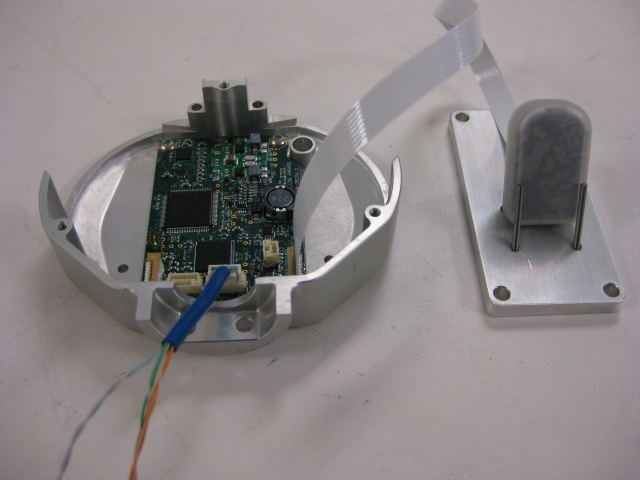

Make sure the gripper board is resting securely on the table. Plug the power and etherCAT cable into the gripper board board.
Set each pair of gripper tips in the fixture and connect the cable to the gripper.
When prompted, you will be asked to touch each sensor of the fingertips. After you touch each sensor, a display will turn from red to green. After all panels are green, you can pass the gripper.
Press 'Continue' to proceed.